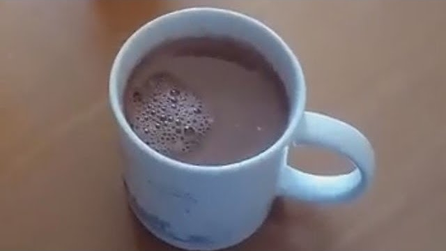
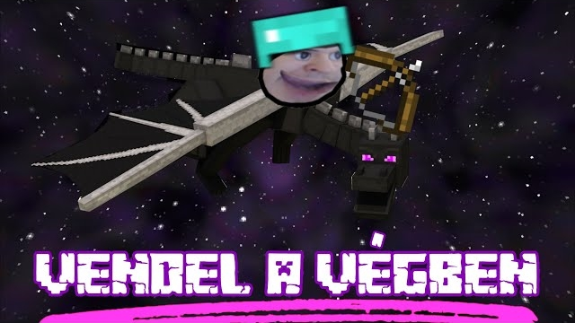
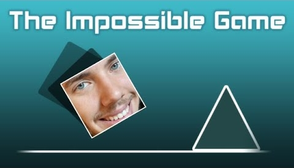

Kakaókészítős videó
YouTube csatornám első videója. Nem a legjobb, mégis ez a legnézetebb videóm.
MEGNÉZEM
VENDEL A VÉGBEN
2019. szeptemberében, mikor Vendel, a Nerdhub Twitch csatornáján elkezdte a Minecraft sorozatát. Nagy rajongója lettem, ezért egy fan made trailert is összeraktam, ezzel bekerülve az egyik Reddites videóba.
MEGNÉZEM
BARNI ÉS A LEHETETLEN JÁTÉK
Abosi Barni 2021. július 28-án kijelentette, editort keres a gameplay videói mellé. Gondoltam, megpróbálkozok vele. Sajnos a pályázatot nem én nyertem.
MEGNÉZEMMolnár Krisztián és az 5000F
2020. júliusában nagyon elterjedt egy kamu hírdetés YouTubeon, ami ismert influenszerek képét használta fel. Ekkor hoztam létre ennek a paródia videóját.
MEGNÉZEM